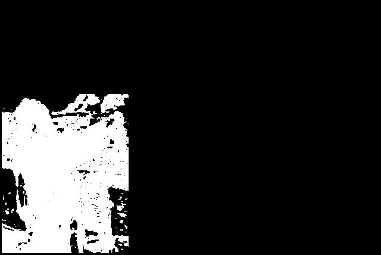
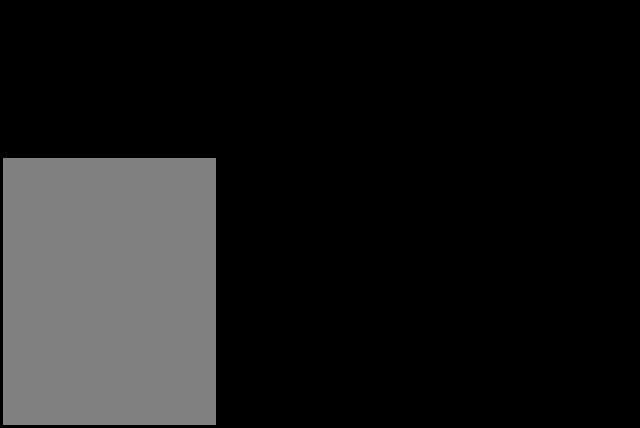
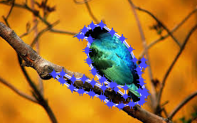
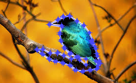

The problem that we attempted to solve was Image Segmentation of Foreground objects from an image.
This is an important tool for both recreational applications and professional uses.
The recreational uses include combining images to make a vacation seem more exciting,
or pretend like a vacation destination was visited while remaining from the comforts of home.
Professional uses include preprocessing an image to find important details to decrease the amount of
computation required for a larger computation task. Due to the wide ranges of uses of this application,
there are a few key components that need to be addressed while designing an algorithm to complete this task.
It is important that the algorithm allows for simple user interactions in order for a wide range of individuals
to be able to use it.
It is also quite important that users do not have to wait for a long time before results are produced from the algorithm.
Solution Approach
The major component of our tool is based on the GrabCut algorithm, which in turn is based on an algorithm called Graph Cut.
These algorithms work by creating a graph from an input image, determining a grouping of similar pixels,
and then using a specialized “cut” algorithm to find the best separation of foreground and background pixels.
The grouping of pixels is accomplished with a Gaussian Mixture Model,
which essentially looks at the color of each point in the image, and finds clusters of similar pixels.
Once the cut has been made, the algorithm creates an alpha map,
which stores a value of 1 at each foreground pixel in the original image, and a 0 at each background pixel.
This map can then be used to separate the foreground pixels,
which may in turn be placed on a new background or used in other processing steps.
Our tool specifically deals with background replacement.
In order to use the algorithm effectively, the user defines a “trimap,”
which defines which pixels are required to stay in the foreground/background,
and which pixels may be placed on one side or the other by the algorithm.
The initial trimap is created when the user draws a simple rectangle around the foreground object they want to extract.
The algorithm will attempt its segmentation, and display the results to the user.
At this point, the user will have an option to modify the trimap by selecting some pixels to define as foreground or background.
After edits have been made, the tool will re-segment the image.
Results
Our algorithm does not maintain the border details as well as some of the newer current state of the art algorithms for image segmentation. However Soft Scissors requires the user to trace along the border of an image, while deep matting requires large preprocessing in order to train the Deep Net required to get accurate estimations for the foreground estimation. We believe that with the simplified user input that our program takes from the user in addition to not require pre-training that other state of the art requires. This allows our implementation to be an acceptable alternative to the state of the art.
High contrast Image without user edits

Image with user edits to trimap
Image before user border edits
Image after user border edits
Lessons Learned, Future Work
We learned a good deal about the difficulties involved in defining a good algorithm for separating complex backgrounds from foreground pixels. In addition, we spent a lot of time trying to understand how to write MATLAB code to run as efficiently as possible, since this algorithm can be fairly computationally intensive. In the future, we would like to investigate re-implementing our tool in another programming language, one which provides better out-of-the-box speed and more user interface tools. We would also like to spend more time tweaking our parameters for the algorithm itself, to achieve better and more consistent results. We would also like to implement border matting, which can help to soften the edges of the extracted foreground, as well as reduce “color bleeding” of the background pixels into the foreground. Finally, it would be nice if our tool had some automatic color matching built in, so that the color and brightness differences between the segmented foreground and replacement background could be reduced.